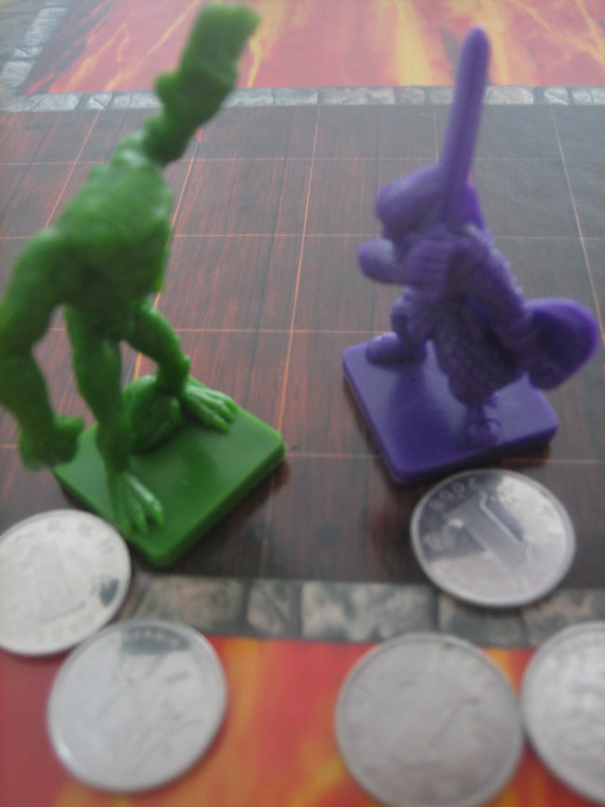

Creació d'una aplicació modular. El joc de combats a l'arena
Durant el procés d’aprendre a programar es van presentant diferents conceptes que es consideren importants, des d’aspectes més teòrics o metodològics (què és un tipus de dades, programació estructurada, disseny descendent, etc.), fins aquells molt lligats a la sintaxi del llenguatge (inicialització de variables, invocació de mètodes, sentències, etc.). Quan s’escriuen programes complexos, és imprescindible saber combinar totes aquestes peces per arribar a bon port. Malauradament, sovint us podeu trobar que resulta factible entendre cada concepte de manera individual, i resoldre problemes simples, però no és senzill veure com encaixar totes les peces en problemes més complexos.
En aquesta unitat es planteja resoldre un problema amb un grau de complexitat alt en explicar el funcionament del joc de combats a l’arena. L’objectiu és que us serveixi d’exemple aplicat, i mostrar com totes aquestes petites peces que heu anat aprenent dins el camp de la programació es poden combinar per poder generar un programa de certa envergadura, així com aprendre alguns criteris que es consideren encertats a l’hora de prendre algunes decisions. Per crear aquest programa, es farà especial èmfasi en el concepte de modularitat, de manera que el seu codi font es compongui de diverses classes i se’n pugui veure clarament la justificació.
El joc de combats a l'arena
El programa que serveix com a fil argumental d’aquest apartat és un joc, en el qual el jugador es va enfrontant amb diversos adversaris en una arena. Cada combat es divideix en rondes, a l’inici de les quals el jugador i el seu adversari trien secretament una estratègia a seguir. Cada ronda pot seguir una estratègia diferent. Segons les estratègies triades per cadascú, el combat s’anirà resolent més favorablement cap a un o cap a l’altre, fins que finalment es consideri que un dels dos ha estat derrotat. Si es derrota l’adversari, s’atorga una puntuació al jugador. Si el jugador és derrotat, acaba la partida. L’objectiu final del jugador és sobreviure deu combats, assolint la màxima puntuació possible en el procés.
Tant per mostrar dades a l’usuari com per introduir les ordres del jugador, s’usa només text.
Descripció detallada del programa
En tractar-se d’un problema més complex, val la pena dedicar un espai a descriure detalladament el problema i veure en què consisteix exactament el joc, en el qual aprofitareu la capacitat d’un ordinador per resoldre ràpidament el tractament d’unes dades per implementar un sistema de combat entre dos lluitadors una mica elaborat, inspirat en els sistemes emprats als CRPG (Computer Role Playing Game “joc de rol per ordinador”, en anglès), però sense arribar ni de bon tros al nivell dels jocs moderns.
Atributs dels lluitadors
Per descriure tots els lluitadors, tant el jugador com els seus adversaris, aquests disposen d’un seguit d’atributs que indiquen el seu estat en tot moment. Alguns d’aquests atributs serveixen per establir com progressa el combat i poden veure modificats els seus valors. Tot seguit s’enumeren:
Podeu trobar una mica més d’informació sobre què és un CRPG a l’adreça http://goo.gl/cxZpb.
- Nom: el nom del lluitador. Per al jugador és “Aventurer”, mentre que per als adversaris es referirà a criatures fantàstiques (“Nan”, “Ogre”, “Hidra”, etc.)
- Nivell: indicador general de la capacitat de combat del lluitador.
- Punts: els punts que ha acumulat el lluitador fins al moment.
- Punts de Vida (PV): l’energia del lluitador actual, que pot variar al llarg del combat. Quan arriba a 0 o menys, es considera derrotat.
- Punts de Vida Màxims: valor màxim que poden tenir els punts de vida en qualsevol moment.
- Atac: la seva capacitat de dur a terme amb èxit estratègies ofensives. S’usa per resoldre el resultat d’una ronda de combat.
- Defensa: igual que l’anterior, però per a estratègies defensives.
Combat entre lluitadors
- 
- Un combat a mort entre dos lluitadors
El programa es basa en què el jugador va realitzant un combat rere l’altre contra diferents adversaris. Per guanyar, ha de sobreviure a deu combats. Fins que no acaba un combat, i s’ha decidit si el jugador l’ha guanyat o l’ha perdut, no es comença un de nou.
A l’inici de cada combat, es mostra l’estat actual del jugador, el valor actual de tots els seus atributs, i se li pregunta contra quin adversari vol lluitar. El jugador ha d’escriure el nom d’un adversari. Si aquest nom no es troba entre el dels adversaris disponibles en el joc, iniciarà un combat contra un triat a l’atzar entre tots els adversaris disponibles del seu mateix nivell o un de diferència. Això evita que, per sorpresa, es trobi que ha de lluitar contra un adversari massa poderós per a ell, impossible de guanyar.
Si el nom pertany a algun adversari disponible, llavors s’enfronta contra ell. En aquest cas, no hi ha cap restricció de nivell. El jugador pot triar lluitar contra adversaris molt més o menys poderosos que ell.
Aquest plantejament està disposat de manera que, d’entrada, un nou jugador no sap el nom de cap adversari, ja que no es proporciona cap llista (a menys que hagi fet el programa o vist el codi font, és clar). La intenció és que vagi descobrint nous noms d’adversaris a mesura que va jugant partides, o parlant amb amics que també juguin al joc.
Resolució d'una ronda de combat
Cada combat es divideix en un seguit de rondes, en cadascuna de les quals el jugador ha de triar quina estratègia vol usar. Al principi de cada ronda es mostra l’estat actual tant del jugador com del seu adversari, de manera que sigui possible avaluar quina via d’acció li pot convenir més dur a terme. Llavors, el jugador tria l’estratègia entre quatre possibles: Atacar, Defensar, Engany i Maniobra. Un cop triada, l’adversari en triarà la seva i es decidirà el resultat de la ronda.
Primer de tot, cal veure per a cada lluitador el grau d’èxit de la seva estratègia. Si ha triat Atacar o Engany, representa que llença tantes monedes com el seu valor d’Atac. Si ha triat Defensar o Maniobra, fa el mateix usant el seu valor de Defensa. El grau d’èxit serà el nombre de cares obtingudes.
El sistema del joc de combats a l’arena està inspirat en el joc de rol de sobretaula “The Mouse Guard RPG” (per David Petersen).
En resoldre la ronda, cada lluitador pot rebre un dels efectes següents. La gravetat de cadascun d’ells depèn del grau d’èxit del lluitador mateix o del seu contrincant.
- Res: no passa res.
- Danyat: el lluitador perd una quantitat de punts de vida igual al grau d’èxit del contrincant.
- Guarit: el lluitador recupera tants punts de vida, sense superar mai el valor màxim, com el seu propi grau d’èxit.
- Penalitzat: el lluitador veu penalitzat el seu valor d’atac o de defensa (es tria a l’atzar) en tants punts com el grau d’èxit del contrincant. La penalització mai pot fer baixar el valor per sota d’1. Aquest efecte dura fins a la propera ronda múltiple de cinc (5, 10, 15, etc.). Llavors, retorna al seu valor original.
L’efecte que rep cada lluitador depèn de les interaccions entre les estratègies, de manera semblant al joc de pedra, paper, tisores. Depenent de l’estratègia triada i la de l’adversari, el resultat serà diferent. La taula mostra el resultat de les interaccions entre estratègies. Per abreujar, “Jug” es refereix al jugador i “Adv” a l’adversari. Un indicador de “x2” vol dir que a l’hora de resoldre aquest efecte, es doblen els èxits assolits pel contrincant.
| Jug\Adv | Atac | Defensa | Engany | Maniobra |
|---|---|---|---|---|
| Atac | Jug i Adv: Danyat | Adv: Guarit | Adv: Danyat | Adv: Danyat |
| Defensa | Jug: Guarit | Jug i Adv: Guarit | Jug: Danyat x2 | Jug: Penalitzat |
| Engany | Jug: Danyat | Adv: Danyat x2 | Jug i Adv: Danyat | Jug: Penalitzat |
| Maniobra | Jug: Danyat | Adv: Penalitzat | Adv: Penalitzat | Jug i Adv: Penalitzat |
Exemple de ronda de combat
Per exemple, suposeu que el jugador té ara mateix 10 punts de vida i els seus valors d’atac i defensa són 4 i 3, respectivament. L’adversari té 6 punts de vida i els seus valors d’atac i defensa són 3 i 5 respectivament. Primer de tot, cadascú tria la seva estratègia. El jugador tria Atac mentre que l’adversari tria Maniobra. Això vol dir que, per veure el grau d’èxit, el jugador llençarà tantes monedes com el seu Atac i l’adversari, en haver triat Maniobra, tantes com la seva defensa. El jugador llença 4 monedes i suposeu que treu dues cares. L’adversari en llença 5 i suposeu que n’obté quatre.
Ara cal veure l’efecte de les estratègies. D’acord a la taula, si el jugador tria Atac i l’adversari tria Maniobra, el resultat és que l’adversari rep l’efecte de “Danyat” (Adv: Danyat). Se li descompten tants punts de vida com el grau d’èxit del jugador (2). Per tant, ara li queden 6 - 2 = 4 punts de vida i acaba aquesta ronda.
S’inicia una nova ronda on es mostra l’estat dels dos lluitadors i es tria una nova estratègia…
Evidentment, a l’hora de triar l’estratègia, l’ordinador no hauria de fer trampes (ja que coneixerà la del jugador abans de triar-ne la seva). Es pot triar a l’atzar, o seguint alguna tàctica segons el seu estat (defensar més sovint si li queden pocs punts de vida, enganyar si el jugador defensa molt sovint, etc.). Això depèn del grau d’intel·ligència que es vol que tingui l’ordinador.
Resolució de la finalització del combat
El combat finalitza quan, en acabar una ronda, un del lluitadors té 0 o menys punts de vida. Si es tracta del jugador, es considera derrotat. La partida acaba i es mostra la seva puntuació final. Aquesta circumstància inclou també el cas d’empat (ambdós lluitadors han arribat a 0 punts de vida). Si, en cas contrari, és l’adversari el derrotat, al personatge se li atorga certa quantitat de punts, que se sumen als que ja disposa. Els punts atorgats dependran dels punts de l’adversari i, normalment, adversaris més difícils tindran sempre punts.
En atorgar punts al jugador, si aquest arriba o supera un valor associat a una centena (100, 200, 300, etc.), es considera que “puja de nivell” i es fa més poderós. Quan això succeeix, el jugador veu incrementat en un punt el seu nivell, el seu màxim de punts de vida s’incrementa en dos, i el seu atac o defensa, un dels dos triat a l’atzar, s’incrementa en un punt. El jugador també és immediatament guarit, recuperant tots els punts de vida actuals fins a aquest nou màxim.
Un cop atorgats els punts i un possible increment del seu nivell, totes les penalitzacions actuals sobre el jugador desapareixen. Ara bé, a menys que hagi pujat de nivell, aquest no recupera cap punt de vida. Començarà el combat següent amb exactament els mateixos punts amb els quals ha finalitzat aquest.
Si aquest era el desè combat, la partida acaba amb un missatge de felicitació i es mostra la puntuació final. En cas contrari, es torna a iniciar un nou combat.
Identificació de les dades a tractar
De la descripció del problema, les dades principals que cal tractar són les dels dos lluitadors, el jugador i els seus adversaris, que seran les mateixes. Afortunadament, la descripció del problema ofereix una visió clara de quina mena de valors cal manipular (Nom, Nivell, Vida, etc.). En aquest cas, atès que són força valors, tots vinculats entre ells, el més factible és usar un array, de manera que es gestioni un per al jugador i un per a l’adversari. D’aquesta manera, amb un parell de variables és senzill disposar de totes les dades vinculades a tots dos. Cada posició de l’array pot representar cadascun dels atributs.
Per tal de triar el tipus de dades a desar, pràcticament tots els atributs dels lluitadors són enters, per la qual cosa es poden usar arrays d’enters per representar-los. L’únic cas especial que trenca aquesta solució simple és el nom, que seria una cadena de text. Per resoldre això es pot usar l’estratègia següent. Dins l’array s’usa un enter per identificar el nom, de manera que cada lluitador sempre tingui un identificador diferent. Llavors, a part, es pot usar una taula de traducció d’identificadors a cadenes de text. L’identificador de tipus enter de cada lluitador diu quin és l’índex dins aquesta taula de traducció on hi ha el seu nom.
Si a simple vista no us queda clar com dur a terme això, no us amoïneu per ara. Quan arribi el moment de mostrar el codi font per fer això, ja es veurà millor.
La taula mostra un resum d’una primera proposta d’estructura de l’array que representa un lluitador, segons les posicions d’aquest. Ara bé, sempre heu de ser conscients que, a mesura que es va codificant el programa, es pot donar el cas que us adoneu que cal modificar-la.
| 0 | 1 | 2 | 3 | 4 | 5 | 6 |
|---|---|---|---|---|---|---|
| Identificador | Nivell | Punts | Vida | Vida Màx | Atac | Defensa |
Disseny descendent
En aquest cas, l’objectiu principal del problema plantejat és veure com crear aplicacions complexes de manera modular. Per tant, no es durà a terme un disseny descendent complet fins al darrer detall, sinó que aquest servirà per fer un esquema clar de quines són les accions que ha de dur a terme el programa i, en alguns casos, en quin ordre. Per tant, aquest apartat també té un paper de suport a l’hora de presentar-vos el problema perquè l’entengueu.
De la descripció del problema general, se’n podrien extreure els subproblemes enumerats tot seguit. Recordeu, però, que potser aquesta no és l’única solució vàlida, és una proposta d’interpretació possible de l’enunciat. Hi poden haver altres descomposicions vàlides.
- Generar els atributs del nou jugador.
- Anunciar inici del combat.
- Mostrar estat del jugador.
- Triar l’adversari.
- Combatre.
- Mostrar estat dels lluitadors.
- Mostrar estat del jugador.
- Mostrar estat de l’adversari.
- Triar estratègia del jugador.
- Triar estratègia de l’adversari.
- Resoldre resultats d’estratègies.
- Llençar monedes.
- Penalitzar lluitador.
- Danyar lluitador.
- Guarir lluitador.
- Restaurar lluitador.
- Resoldre resultat del combat.
- Atorgar puntuació.
- Pujar de nivell.
- Finalització del joc.
Aquesta llista ja dóna una bona idea del conjunt de tasques que cal fer. En aquest cas, a mesura que es vagi resolent cada subproblema, si es considera que encara és massa complex o resulta que és un mètode massa llarg, ja es faran noves descomposicions en el mateix moment. Aquesta és una estratègia acceptable per a programes complexos, ja que la descomposició es pot fer molt complicada, en ser difícil veure realment tots els detalls i tenir una idea clara de la mida o complexitat dels mètodes resultants. Però al menys, sempre heu de tenir la disciplina de fer una primera aproximació, per generar el codi font amb una idea clara de per on començar.
Abans de seguir, val la pena fer alguns comentaris. Els subproblemes 4.II i 4.III s’han considerat diferents ja que, si us hi fixeu, hauran de dur a terme tasques força diferents. En el cas del jugador, es pregunta directament a l’usuari, mentre que en el cas de l’adversari l’ordinador és qui l’ha de generar d’alguna manera (per exemple, simplement a l’atzar). En canvi, per al cas dels subproblemes 4.I.a i b, de ben segur que faran el mateix. Només canviaran les dades a tractar. Per tant és un cas clar de parametrització d’un mètode. Per acabar, aquest plantejament també reaprofita subproblemes, ja que el 4.I.a i el 2.I són exactament el mateix.
Mòduls
Si es vol considerar una aproximació modular, un cop es coneixen les tasques que ha de dur a terme el programa en forma de subproblemes, el pas següent seria agrupar-les d’acord al tipus d’accions que porten a terme. Cada conjunt serà un mòdul diferent. En aquest cas, atès que el programa es fa en Java, ja s’usarà directament una organització en classes i packages.
Com a punt de partida, caldria escollir un nom de package general per a tot el programa. Aquest serà joc.arena. La classe principal anirà aquí.
A continuació, cal escollir si es vol usar una jerarquia de packages que parteixi de la base per ordenar totes les classes o no. Per a aquest cas, sol ser una bona política dividir les parts vinculades amb la interfície d’usuari de les que estan lligades a la manipulació de les dades del programa. En separar els aspectes relacionats amb la presentació de les dades del seu tractament, els canvis en els mòduls d’un programa(per exemple, passar d’una interfície textual a una gràfica) no afecten el codi dels mòduls de l’altre. Aquesta divisió es pot fer usant dos packages: joc.arena.regles i joc.arena.interficie.
Ara és el moment de dividir les tasques que ha de fer el programa en classes i triar a quin package anirà cadascuna. Aquest procés és relativament subjectiu i s’avé a la visió que té el programador sobre com s’ha d’estructurar el seu programa. En aquest sentit, la decisió és tan personal com decidir de quina manera classificar fotos en carpetes dins d’un ordinador. De totes formes, en aquest procés, el que heu de tenir sempre en compte és que l’objectiu final és organitzar el vostre codi de manera que sigui fàcil d’identificar on trobar cada mètode.
En aplicar modularitat, cal que cada classe encapsuli un conjunt de tasques clarament relacionades, independentment del nombre de mètodes que al final signifiqui que hi ha a cada classe (molts o pocs).
L’objectiu no és distribuir uniformement els mètodes per fer classes de mida similar. Si a un programa s’identifiquen 30 mètodes, l’objectiu no és crear 6 classes perquè hi hagi 5 mètodes a cadascuna.
Per a aquest problema es proposa la divisió següent en mòduls. Al package joc.arena.regles hi haurà les classes:
- Monedes: per a les tasques vinculades al llançament de monedes per resoldre una ronda.
- Lluitador: per a les tasques vinculades a la manipulació de les dades d’un lluitador (danyar, guarir, etc.).
- Bestiari: per a les tasques vinculades a la generació d’adversaris i el jugador.
- Combat: per a les tasques vinculades a la resolució d’estratègies enfrontades.
Al package joc.arena.interficie es decideix dividir les classes que tracten la pantalla i el teclat, de manera que hi haurà:
- EntradaTeclat: s’encarrega de les tasques importants que són donades pel que escriu l’usuari usant el teclat.
- SortidaPantalla: com l’anterior, però per mostrar informació a pantalla.
La classe principal, JocArena és al package que engloba els anteriors, joc.arena, donada la jerarquia de noms.
La solució completa de l’exemple emprat en aquest apartat el podeu trobar a la secció “Annexos” del web
Un cop es disposa d’aquesta divisió, cada cop que calgui implementar un subproblema en forma de mètode, caldrà fer-ho a la classe que correspongui d’acord a aquesta distribució de tasques.
La biblioteca "joc.arena.regles"
Abans de poder mostrar dades per pantalla, cal poder disposar d’elles i haver-les manipulat. Per tant, el que té més sentit és començar per aquest package i no pas per joc.arena.interficie. De fet, de ben segur que des de les classes per mostrar o entrar dades al programa s’invocaran mètodes de tractament de dades. O sigui, mètodes de classes d’aquest package.
Per tant, el primer package a tractar és aquest.
La classe Monedes
Aquesta classe agrupa els mètodes vinculats als aspectes aleatoris quan es resol un combat. Bàsicament, això es redueix al llançament d’un cert nombre de monedes per comptar quantes cares s’han tret. Això es pot dur a terme usant la classe Random, pertanyent al package java.util de l’API de Java, que permet generar valors a l’atzar. Com que només es vol mirar si es treu cara o creu, es pot usar el mètode nextBoolean, de manera que si s’avalua true, es considera cara, i en cas contrari, creu. Dins d’aquest programa, seria la classe més senzilla.
Com es pot veure en el codi font, aquesta classe només disposa d’un mètode, ja que, donat el plantejament del problema, només hi ha una acció vinculada al llançament de monedes. Això no és cap problema. Recordeu que, per generar els mòduls d’un programa, el criteri principal i més important és establir parcel·les diferenciades segons les funcionalitats o temàtiques dels mètodes inclosos. No es tracta d’intentar distribuir-los equitativament en parts iguals.
La classe Lluitador
Aquesta classe és la més important, ja que és la que gestiona la manipulació de l’estat dels lluitadors. I per a la descripció del problema, es pot veure que a un lluitador li poden passar moltes coses… Per tant, aquesta classe es tractarà amb molt de detall, ja que serveix per aprendre moltes coses sobre com fer un programa modular correcte.
Quan cal tractar un conjunt de dades de manera complexa, sempre és interessant dedicar un mòdul íntegrament a totes les operacions que es volen dur a terme amb aquestes. Sobretot si algunes de les operacions s’usaran en molts llocs diferents. Un exemple és el cas de disposar d’un repositori de mètodes per manipular arrays o cadenes de text que segueixen un format especial. D’aquesta manera, aquestes manipulacions queden encapsulades sota l’identificador d’un mètode i el codi és més fàcil de seguir.
En aquest cas, hi ha un conjunt de dades molt particulars sobre les quals cal fer unes quantes operacions complexes: l’array que representa cada lluitador. Res impedeix treballar directament amb índexs de posicions per manipular els seus valors, però és millor crear un mètode per a cada operació que es vol dur a terme. És més fàcil entendre una instrucció on posa danyar(jugador, 3) que no pas jugador[3] = jugador[3] - 2;. A més a més, moltes d’aquestes operacions ja sorgeixen de la descomposició del problema general (per exemple, subproblemes “Combatre> Resoldre resultats d’estrategues: Llençar monedes, penalitzar lluitador, danyar lluitador, guarir lluitador”.
L’estratègia final d’aquesta classe és: si un mètode tindria com a paràmetre un lluitador, ja que ha de dur a terme una tasca segons els seus valors, llavors va dins d’aquesta classe.
Mètodes bàsics de manipulació de dades
D’acord amb la descripció del problema, com a mínim cal poder fer les operacions següents sobre un lluitador, ja que modifiquen el seu estat:
- Danyar: restar punts de vida.
- Guarir: incrementar punts de vida, fins a un màxim.
- Penalitzar: restar punts d’Atac o Defensa a l’atzar, però mai de manera que el valor final quedi per sota d’1.
- Restaurar: recuperar-se de les penalitzacions (es fa cada ronda múltiple de 5).
- Renovar: recuperar tots els punts de vida i eliminar les penalitzacions (en pujar de nivell).
- Atorgar puntuació: sumar punts guanyats per un combat.
- Pujar de nivell: dur a terme el procés d’increment d’un nivell.
Un cop arribats a aquest punt, es pot detectar que per fer una operació de restaurar, cal saber quin era el valor original de l’Atac o la Defensa. Per tant, el plantejament inicial de com estructurar l’array amb les dades dels lluitadors no és suficient. El fet de trobar-vos que heu de reenfocar part del disseny quan heu arribat a la implementació del codi no és un fet estrany. La taula mostra el nou format emprat per representar un lluitador.
| 0 | 1 | 2 | 3 | 4 | 5 | 6 | 7 | 8 |
|---|---|---|---|---|---|---|---|---|
| Identificador | Nivell | Punts | Vida | Vida Màx | Atac | Atac Màx | Defensa | Defensa Màx |
Hi ha un altre aspecte que val la pena considerar en aquest cas, on cada posició de l’array que representa un lluitador té un significat molt concret. Es tracta de no usar directament números per accedir a les posicions de l’array, sinó fer-ho a partir de constants. Això té dues funcions. D’una banda, millora la llegibilitat del programa. D’altra banda, si en el futur es volen incloure més dades a l’array o canviar algun dels camps existents (per exemple, ara el nivell estarà a la posició 3), només caldrà modificar el valor de la constant i el canvi es propagarà a la resta del codi. Com acabeu de veure, haver de canviar el plantejament de les posicions d’un array pot passar perfectament. Cal ser previsors.
Finalment, per aprofitar la capacitat que us proporciona un programa per dur a terme càlculs de certa complexitat, l’atorgament dels punts tindrà una particularitat. Sobre els punts que val cada adversari s’aplica un factor de correcció de 0*5 punts per cada nivell de diferència. D’aquesta manera, adversaris proporcionalment més difícils valen més punts, però lluitar repetides vegades contra adversaris de nivell massa baix no reporta cap punt. Per veure-ho, estudieu el mètode atorgarPunts.
Mètodes vinculats a l'estat del lluitador
Atès que aquesta classe inclou tots els mètodes que depenen de l’estat d’un lluitador per fer la seva feina, també cal incloure, no només els que modifiquen el seu estat, sinó també els mètodes el resultat dels quals depèn d’aquest estat. Aquests inclouen els que fan les operacions següents:
- Calcular el grau d’èxit d’Atac, ja que depèn del valor d’Atac del lluitador.
- El mateix per a la defensa.
- Triar una estratègia a l’atzar, ja que es pot usar l’estat del lluitador per prendre certes decisions. Aquí es farà que si els punts de vida de l’adversari són molt baixos, és més probable que decideixi defensar.
Mètodes per facilitar la lectura de les dades
Finalment, quan es treballa amb conjunts de dades amb una funció molt especial, com és aquest cas, pot valer la pena també incloure mètodes que serveixin com a dreceres per fer lectures de les dades que contenen. Aquests no fan res d’especial que no es podria fer accedint directament a l’array per índex, però poden fer el codi de la resta de classes més aclaridor, i a més a més, en cas de documentar la classe usant el javadoc, serveixen com una llista de les dades a les quals es pot accedir individualment.
La classe Bestiari
Aquesta classe s’encarrega de tots els aspectes vinculats a la generació dels lluitadors, tant de les dades inicials del jugador com la dels adversaris triats pel jugador (veure si hi ha el que s’ha demanat, i si no és el cas, triar-lo a l’atzar). En aquest cas, s’ha escollit que els adversaris no es generin a l’atzar, sinó que les seves dades ja existeixin dins el codi font, de manera que, donat un adversari amb un nom concret, sempre sigui igual. Per emmagatzemar-los, s’usa un array bidimensional: un array on en cada posició hi ha l’array que descriu els valors d’un adversari. Atès que és on estan definits els noms dels lluitadors, també es gestiona la traducció dels identificadors dels lluitadors al seu nom.
En aquesta classe també es mostra una possibilitat quan s’usen mètodes d’una altra classe sovint dins del codi font. En lloc d’inicialitzar constantment la classe per poder invocar els seus mètodes, hi ha l’opció de declarar la variable on es duu a terme la inicialització com a global. Com a variable global té un àmbit igual a tota la classe, pot ser usada des de qualsevol lloc per invocar mètodes de l’altra classe. Això és tot just el que passa amb la variable lluitador. Fixeu-vos-hi.
La classe Combat
Aquesta classe s’encarrega dels aspectes vinculats a la resolució d’una ronda de combat, donat l’estat actual dels dos lluitadors (punts de vida, Atac i Defensa) i l’estratègia triada per aquesta ronda. Bàsicament, sobre ella recau el pes del subproblema “Combatre>Resoldre resultats d’estràtegia” resultant del disseny descendent. Com que aquest encara es divideix en altres subproblemes, per fer les seves tasques li caldrà fer invocacions sobre altres mètodes (concretament, de la classe Lluitador).
Per indicar cada estratègia s’usa un valor enter, de manera que fer comparacions és molt més senzill que no pas amb cadenes de text. Per facilitar la lectura del codi, el valor associat a cada estratègia s’assigna a una constant. Fixeu-vos com mitjançant invocacions a mètodes de la classe Lluitador es modifica l’estat de cada lluitador segons la resolució de la ronda. Si s’han triat els noms dels mètodes de manera adient, aquest sistema deixa molt clar què succeeix en cada cas sense haver d’anar a inspeccionar el codi font de Lluitador.
A més a més, amb ja certa previsió amb vista a mostrar dades per pantalla, s’inclou un mètode que serveix per transformar una acció donada a la seva representació en format text. Es tracta del mètode estrategiaAText.
El codi d’aquesta classe seria el següent:
La biblioteca "joc.arena.interficie"
Un cop es disposa del codi font de totes les classes que gestionen les dades a manipular, ja és possible generar les que les obtenen o les mostren a l’usuari.
La classe EntradaTeclat
Donada la descripció del problema general, només hi ha dos casos on l’usuari ha d’entrar dades usant el teclat. Per indicar contra quin adversari vol lluitar en iniciar-se un combat i per dir l’estratègia a seguir en una ronda de combat. Per tant, només cal incloure dos mètodes:
triarAdversari, associat al subproblema “Triar l’adversari”.preguntarEstrategia, associat al subproblema “Combatre>Triar estratègia del jugador”.
Per al cas de l’estratègia, es donarà a triar amb un menú amb quatre opcions, cadascuna associada a una lletra: [A]tacar, [D]efensar, [E]ngany i [M]aniobra.
Un fet interessant d’aquesta classe és que, atès que a la classe Combat les quatre estratègies possibles estan indicades mitjançant constants, cal traduir la lletra que ha escrit l’usuari al valor de la constant associada. Per accedir a una constant declarada a una altra classe, cal usar la mateixa sintaxi que per invocar un mètode estàtic, però usant l’identificador de la contant: NomClasse.NOM_CONSTANT. Això es pot veure al codi del mètode preguntarEstrategia.
La classe SortidaPantalla
En aquesta classe s’agruparien els mètodes en els quals cal més d’una única instrucció per mostrar informació per pantalla. Concretament es tractaria dels mètodes associats als subproblemes “Anunciar inici de combats>Mostrar estat del jugador” i “Combatre>Mostrar l’estat dels lluitadors: Mostrat estat del jugador, Mostrar estat de l’adversari” del resultat d’aplicar disseny descendent. No es tracta d’una classe molt complexa.
La classe principal
Quan es genera un programa modular estructurat d’acord a una certa jerarquia de packages, la classe principal se sol ubicar en el package arrel, tota sola. Recordeu que aquesta és la que s’encarrega de resoldre el problema general a partir de la invocació de mètodes de tota la resta de classes dels altres packages.
Per a aquest programa, el seu codi seria el següent. Observeu com, novament, la seva estructura és molt propera al primer nivell de descomposició del disseny descendent.
Simplificació d'algorismes complexos usant recursivitat
A l’hora de crear programes complexos, un dels aspectes que diferencia el bon programador de l’aficionat és la seva capacitat de fer algorismes eficients. O sigui, que siguin capaços de resoldre el problema plantejat en el mínim de passes. En el cas d’un programa, això significa la necessitat d’executar el mínim nombre d’instruccions possible. Certament, si el resultat ha de ser exactament el mateix, sempre serà millor fer una tasca en 10 passes que no pas en 20, intentant evitar passes que en realitat són innecessàries. Per tant, l’etapa de disseny d’un algorisme és força important i cal pensar bé una estratègia eficient. Ara bé, normalment, els algorismes més eficients també són més difícils de pensar i codificar, ja que no sempre són evidents.
Un exemple molt senzill d’això és la resolució del problema següent. Suposeu que una amiga apunta un número entre el 0 i el 99 en un full de paper i vosaltres l’heu d’endevinar. Cada cop que contesteu, us dirà si el valor que heu dit és més gran o més petit que el que heu d’endevinar. Quina estratègia seguiríeu per assolir-ho? Cal pensar un algorisme a seguir per resoldre aquest problema.
Una aproximació molt ingènua podria ser anar dient tots els valors un per un, començant pel 0. està clar que quan arribeu al 99 l’haureu endevinat. En el millor cas, si havia escrit el 0, encertareu a la primera, mentre que en el pitjor cas, si havia escrit el 99, necessitareu 100 intents. Si estava pel mig, potser amb 40-70 n’hi ha prou. Aquest seria un algorisme que fa el fet i és molt senzill, però no gaire eficient. Anar provant valors a l’atzar en lloc de fer això tampoc millora gran cosa el procés, i ve a ser el mateix.
De ben segur, si mai heu jugat a aquest joc, el que heu fet és ser una mica més astuts i començar per algun valor del mig. En aquest cas, per exemple, podria ser el 50. Llavors, en cas de fallar, un cop sabeu si el valor secret és més gran o més petit que la vostra resposta, en l’intent següent provar un valor més alt o més baix, i anar fent això repetides vegades.
Generalment, la millor estratègia per endevinar un número secret entre 0 i N seria primer provar N/2. Si no s’ha encertat, llavors si el número secret és més alt s’intenta endevinar entre (N/2 + 1) i N. Si era més baix, s’intenta endevinar el valor entre 0 i N-1. Per a cada cas, es torna a provar el valor que hi ha al bell mig del nou interval. I així successivament, fent cada cop més petit l’interval de cerca, fins a endevinar-lo. En el cas de 100 valors, això garanteix que, en el pitjor dels casos, en 7 intents segur que s’endevina. Això és una millora molt gran respecte al primer algorisme, on calien 100 intents, i per tant, aquest seria un algorisme més eficient. Concretament, sempre s’endevinarà en log2(N) intents com a màxim.
Si us hi fixeu, l’exemple que tot just s’acaba d’explicar, en realitat, no és més que un esquema de cerca dins una seqüència de valors, com pot ser dins d’un array, partint de la condició que tots els elements estiguin ordenats de més petit a més gran. De fet, fins ara, per fer una cerca d’un valor dins d’un array s’ha usat el sistema “ingenu”, mirant una per una totes les posicions. Però si els elements estan ordenats prèviament, es podria usar el sistema “astut” per dissenyar un algorisme molt més eficient, i fins a cert punt, més “intel·ligent”.
L’algorisme basat en aquesta estratègia es coneix com cerca binària o dicotòmica.
El mètode binarySearch de la classe Arrays fa una cerca dicotòmica.
Per tant, per què no aplicar aquest coneixement per millorar el mètode cercarAdversari, a la classe Bestiari?
Aplicació de la recursivitat
Malauradament, sovint us trobareu que explicar de paraula la idea general d’una estratègia pot ser senzill, però traduir-la a instruccions de Java ja no ho és tant. Atès que cal anar repetint unes passes en successives iteracions, està més o menys clar que el problema plantejat per fer cerques eficients es basa en una estructura de repetició. Però no es recorren tots els elements i l’índex no s’incrementa un a un, sinó que es va canviant a valors molt diferents per cada iteració. No és un cas evident. Precisament, aquest exemple no s’ha triat a l’atzar, ja que és un cas en què us pot anar bé aplicar un nou concepte que permet facilitar la definició d’algorismes complexos on hi ha repeticions.
La recursivitat és una forma de descriure un procés per resoldre un problema de manera que, al llarg d’aquesta descripció, s’usa el procés mateix que s’està descrivint, però aplicat a un cas més simple.
De fet, potser sense adonar-vos-en, ja s’ha usat recursivitat per descriure com resoldre un problema. Per veure què vol dir exactament la definició formal tot just descrita, es repetirà el text en qüestió, però remarcant l’aspecte recursiu de la descripció:
-

- Una definició recursiva: les inicials del sistema operatiu GNU volen dir "GNU is Not Unix". Font: The GNU Art Gallery
“Generalment, la millor estratègia per endevinar un número secret entre 0 i N seria primer provar N/2. Si no s’ha encertat, llavors si el número secret és més alt s’intenta endevinar entre (N/2 + 1) i N. Si era més baix, s’intenta endevinar el valor entre 0 i N-1. Per a cada cas, es torna a provar el valor que hi ha al bell mig del nou interval. I així successivament, fins a endevinar-lo.”
O sigui, el procés d’endevinar un número es basa en el procés d’intentar endevinar un número! Això sembla fer trampes, ja és com usar la mateixa paraula que es vol definir a la seva pròpia definició. Però fixeu-vos en un detall molt important. Els nous usos del procés d’“endevinar” són casos més simples, ja que primer s’endevina entre N valors possibles, després entre N/2 valors, després entre N/4, etc. Aquest fet no és casual i d’ell depèn poder definir un procés recursiu de manera correcta.
Implementació de la recursivitat
La implementació de la recursivitat dins del codi font d’un programa es fa a nivell de mètode.
Un mètode recursiu és aquell que, dins del seu bloc d’instruccions, té alguna invocació a ell mateix.
El bloc de codi d’un mètode recursiu sempre es basa en una estructura de selecció múltiple, on cada branca és d’algun dels dos casos possibles descrits tot seguit.
D’una banda, en el cas base, que conté un bloc instruccions dins de les quals no hi ha cap crida al mètode mateix. S’executa quan es considera que, a partir dels paràmetres d’entrada, el problema ja és prou simple com per ser resolt directament. En el cas de la cerca, seria quan la posició intermèdia és exactament el valor que s’està cercant, o bé quan ja es pot decidir que l’element a cercar no existeix.
D’altra banda, hi ha el cas recursiu, que conté un bloc d’instruccions dins de les quals hi ha una crida al mètode mateix, atès que es considera que encara no es pot resoldre el problema fàcilment. Ara bé, valors usats com a paràmetres d’aquesta nova crida han de ser diferents als originals. Concretament, han de ser uns valors que tendeixin a apropar-se al cas base. En el cas de la cerca, es correspon a la cerca sobre la meitat dels valors originals, ja sigui cap a la meitat inferior o superior. Aquest és un cas en què l’interval de posicions on es farà la nova cerca es va apropant al cas base, ja que tard o d’hora, crida rere crida, l’espai de cerca s’anirà reduint fins que, o bé es troba l’element, o queda clar que no hi és.
Dins de l’estructura de selecció sempre hi ha d’haver almenys un cas base i un de recursiu. Normalment, els algorismes recursius més senzills en tenen un de cada. És imprescindible que els casos recursius sempre garanteixin que successives crides van aproximant els valors dels paràmetres d’entrada a algun cas base, ja que, en cas contrari, el programa mai acaba i es produeix el mateix efecte que un bucle infinit.
En Java, en cas d’un bucle infinit en fer crides recursives es produeix un error de Stack Overflow (“desbordament de pila”, en anglès).
Càlcul recursiu de l'operació factorial
Com exemple del funcionament d’un mètode recursiu, es començarà amb un cas senzill. Es tracta del càlcul de l’anomenada operació factorial d’un valor enter positiu. Aquesta és unària i s’expressa amb l’operador exclamació (per exemple, 4!, 20!, 3!). El resultat d’aquesta operació és la multiplicació de tots els valors des de l’1 fins a l’indicat (7! = 1*2*3*4*5*6*7). Normalment, la definició matemàtica d’aquesta operació es fa de manera recursiva:
- 0! = 1 (cas base)
- n! = n*(n - 1)! (cas recursiu)
Així, doncs, fixeu-vos que el cas recursiu realitza un càlcul que depèn d’usar la pròpia definició de l’operació, però quan ho fa és amb un nou valor inferior a l’original, de manera que es garanteix que, en algun moment, es farà una crida recursiva que desembocarà en el cas base. Quan això passi, la cadena de crides recursives acaba. Una manera de veure això és desenvolupant pas per pas aquesta definició:
- 4! = 4*(4 - 1)! = 4*(3)!
- 4*3! = 4*(3*(3 - 1))! = 4*3*(2)!
- 4*3*2! = 4*3*(2*(2 - 1))! = 4*3*2*(1)!
- 4*3*2*1! = 4*3*2*(1*(1 - 1))! = 4*3*2*1*(0)!
- 4*3*2*1*0! = 4*3*2*1*(1) = 24
La seva implementació en Java seria la següent. Ara bé, en aquest codi s’han afegit algunes sentències per escriure informació per pantalla, de manera que es vegi amb més detall com funciona un mètode recursiu. Veureu que, inicialment, es porten a terme un seguit d’invocacions del cas recursiu, un rere l’altre, fins que s’arriba a una crida que executa el cas base. És a partir de llavors quan, a mesura que es van executant les sentències return del cas recursiu, realment es va acumulant el càlcul. Una altra manera de veure-ho és depurant el programa.
Càlcul recursiu de la cerca dicotòmica
Tot seguit es mostra el codi de l’algorisme recursiu de cerca dicotòmica sobre un array. Observeu atentament els comentaris, els quals identifiquen els casos base i recursius. En aquest cas, hi ha més d’un cas base i recursiu. Si voleu veure amb més detall com funciona, el podeu depurar per veure com van evolucionant els valors dels paràmetres d’entrada en successives invocacions als casos recursius.
Pràcticament qualsevol problema que es pot resoldre amb un algorisme recursiu també es pot resoldre amb sentències d’estructures de repetició. Però molt sovint la seva implementació serà molt menys evident i les interaccions entre instruccions força més complexes que l’opció recursiva (un cop s’entén aquest concepte, és clar).
Recursivitat al joc de combats a l'arena
Un cop coneixeu la base genèrica per generar un algorisme recursiu, és el moment d’aplicar-lo per incloure una cerca dicotòmica dins del joc proposat. En aquest cas, es tractaria de millorar el mètode cercarAdversari, de manera que, en lloc de fer la cerca posició per posició, es faci de manera més eficient. La cerca es fa sobre els noms dels adversaris, que han d’estar prèviament ordenats alfabèticament. Per tant, per poder dur a terme aquesta millora, cal garantir que la llista de noms està ordenada i que els valors dels identificadors als arrays amb els atributs de tots els adversaris continuen encaixant amb la nova llista de noms. Fer això manualment pot ser una mica pesat, sobretot si en el futur s’afegeixen nous adversaris. L’ordenació es pot dur a terme amb codi tot just al principi del programa.
Per les característiques modulars del programa, el nou mètode de cerca i el d’ordenació anirien dins de la classe Bestiari. Tot seguit es mostra el nou codi que cal afegir. En el cas de cercarAdversari, aquest reemplaçaria el ja existent. La resta són nous.
Estudieu atentament el codi següent, que presenta la solució al que es planteja. Presteu especial atenció a com es fa la comparació entre cadenes de text mitjançant el mètode compareTo de la classe String. Aquest indica si una cadena de text és igual, o té un ordre alfabètic inferior o superior a una altra. També tingueu en compte que les majúscules i minúscules es consideren lletres diferents i afecten l’ordre de les paraules. Per tant, per evitar que això succeeixi, sempre es passa tot a minúscula abans de comparar, amb el mètode toLowercase.
Per garantir que els noms estan ordenats alfabèticament, caldrà cridar el mètode d’ordenació tan bon punt s’iniciï el programa, al mètode inici a la classe JocArena.
Amb aquestes esmenes, s’ha aplicat recursivitat per millorar l’eficiència del programa. És clar que, per trobar adversaris dins una llista de 10 elements no serà pas evident a simple vista, però fer programes eficients és important per tal de permetre la gestió de quantitats molt més grans d’informació.